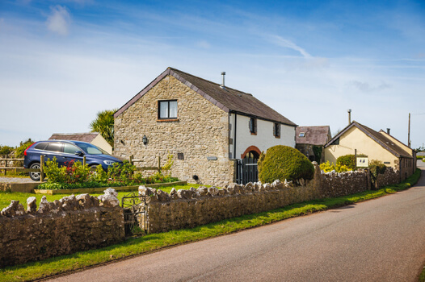
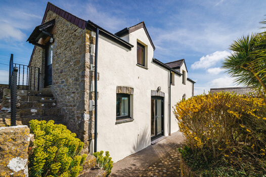

Luxury Holiday Cottages in Pembrokeshire National Park
Pen-y-Holt Farm can be found in Britain's only Coastal National Park. It is situated at the end of the village of Castlemartin. Pen-y-Holt Farm is a group of 5 converted barns. The two for rent are The Granary and The Byre which are luxury holiday cottages in Pembrokeshire. Pen-y-Holt Farm is just under 2 miles from Freshwater West which is a perfect beach for all the family from bucket and spade, to rolling down sand dunes, to surfing the waves and exploring the rock pools. It is one of Wales's top surfing beaches and even hosted the Welsh National Surfing Championships. Freshwater West has also featured in two films – Ridley Scott's Robin Hood and Harry Potter and the Deathly Hallows.
Pen-y-Holt Farm

Pen-y-Holt farm is a rural haven set within easy reach of beautiful beaches and the many varied activities Pembrokeshire has to offer. Choose between scenic coastal walks, castles to explore, surfing, coasteering, going on a boat trip or whale and dolphin watching… the choice is endless.
Learn More »
The Granary

The Granary is a beautiful luxury barn conversion full of character with exposed stone, wood beams and a wood-burning stove. It is well equipped to a high standard with contemporary furnishings. The Granary is very spacious and luxurious, it sleeps 4 plus baby.
Learn More »
The Byre

The Byre is a luxury three-bedroom barn conversion. It sleeps 4 plus baby. The Byre is also full of character with a cosy wood-burning stove, a spacious open plan layout, a mezzanine area for extra seating and exposed wood beams complementing the white washed walls.
Learn More »
Welcome to Pen-y-Holt
 A welcome message from Anne, the owner of The Granary and The Byre.
A welcome message from Anne, the owner of The Granary and The Byre.